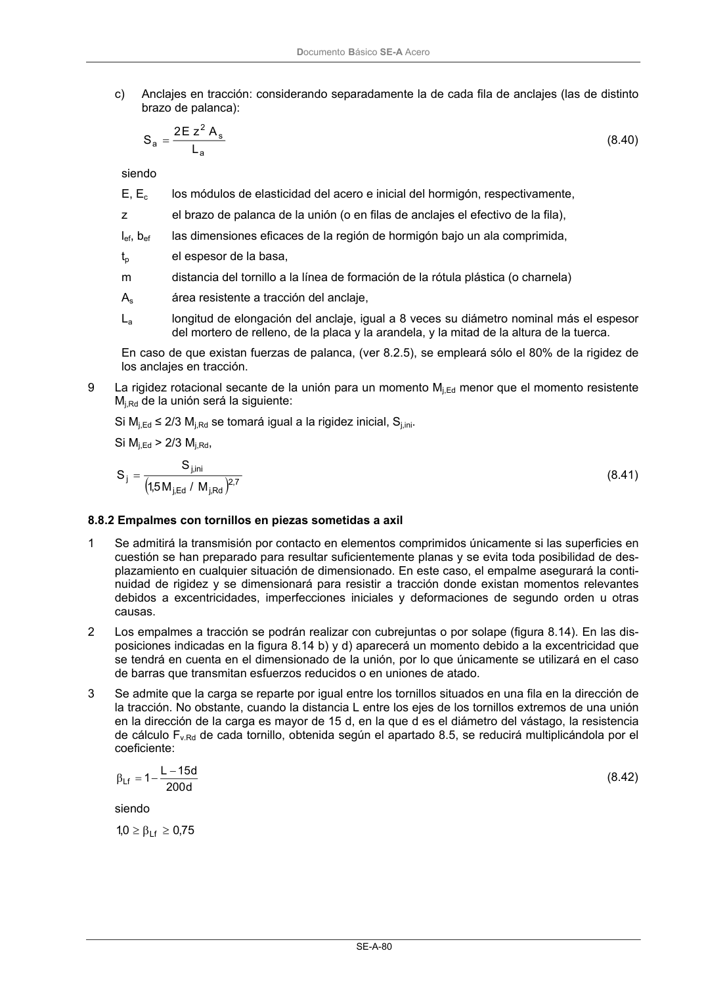

DB-SE-A Acero · edición 2007-10-23 · capa oficial
Documento DB-SE-A-oficial · SHA-256 del PDF 9ed9ea694aabfbda3bfbbef40dfe9223fde05d13c35bc2ba9751e5a96a22a64f
Copia fiel del PDF fuente · Fuente oficial
Ficha de la disposición en la fuente oficial
Formatos: JSON del segmento · Markdown
8.8.2 Empalmes con tornillos en piezas sometidas a axil 1 Se admitirá la transmisión por contacto en elementos comprimidos únicamente si las superficies en cuestión se han preparado para resultar suficientemente planas y se evita toda posibilidad de des- plazamiento en cualquier situación de dimensionado. En este caso, el empalme asegurará la conti- nuidad de rigidez y se dimensionará para resistir a tracción donde existan momentos relevantes debidos a excentricidades, imperfecciones iniciales y deformaciones de segundo orden u otras causas. 2 Los empalmes a tracción se podrán realizar con cubrejuntas o por solape (figura 8.14). En las dis- posiciones indicadas en la figura 8.14 b) y d) aparecerá un momento debido a la excentricidad que se tendrá en cuenta en el dimensionado de la unión, por lo que únicamente se utilizará en el caso de barras que transmitan esfuerzos reducidos o en uniones de atado. 3 Se admite que la carga se reparte por igual entre los tornillos situados en una fila en la dirección de la tracción. No obstante, cuando la distancia L entre los ejes de los tornillos extremos de una unión en la dirección de la carga es mayor de 15 d, en la que d es el diámetro del vástago, la resistencia de cálculo Fv.Rd de cada tornillo, obtenida según el apartado 8.5, se reducirá multiplicándola por el coeficiente: d 200 d 15 L 1 Lf − − = β (8.42) siendo 75 ,0 0,1 Lf≥ β ≥ DocumentoBásico SE-A Acero SE-A-81 Figura 8.14 Empalmes con tornillos 4 Si los tornillos deben atravesar forros intermedios con espesor total: 3 d tp> (8.43) donde d es el diámetro del vástago, se reducirá la resistencia a cortadura del tornillo, utilizando el factor: 1 t 3 d 8 d 9 p p ≤ + = β (8.44) En uniones a doble cortadura con forros a ambos lados del eje de la unión se tomará como valor de tp el mayor de los espesores de dichos forros. 5 En uniones a solape con un solo tornillo, se dispondrán arandelas bajo la tuerca y bajo la cabeza, limitándose la resistencia a aplastamiento Fb.Rd al valor: M2 u Rd , b t d f 5,1 F γ ≤ (8.45) siendo t menor espesor de las placas que se unen; fu resistencia a rotura del acero de las chapas que se unen.
